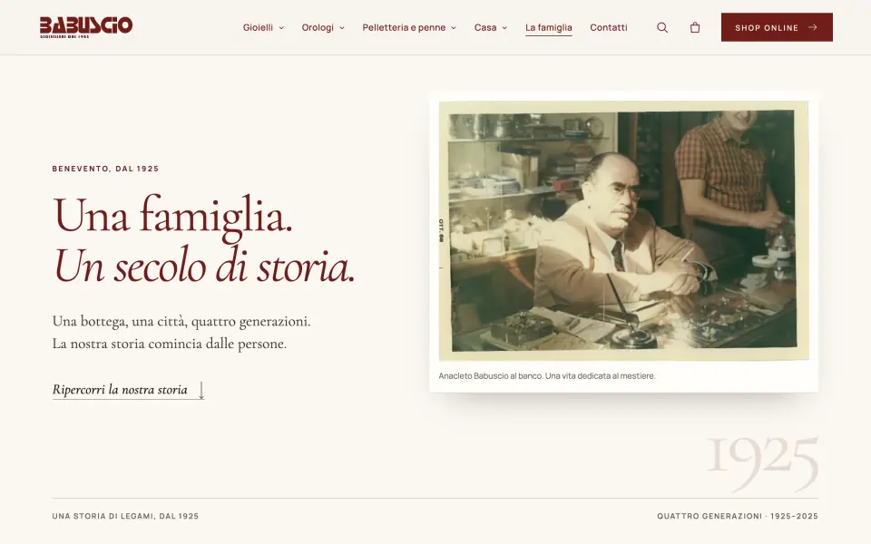
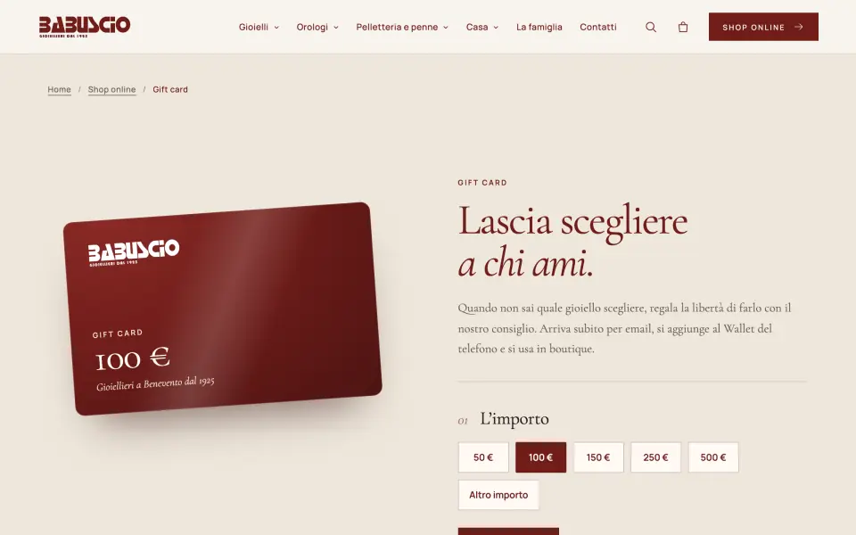
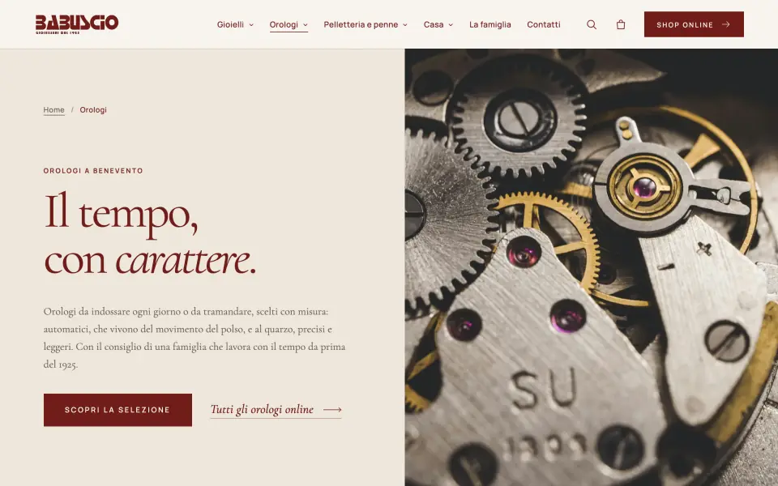
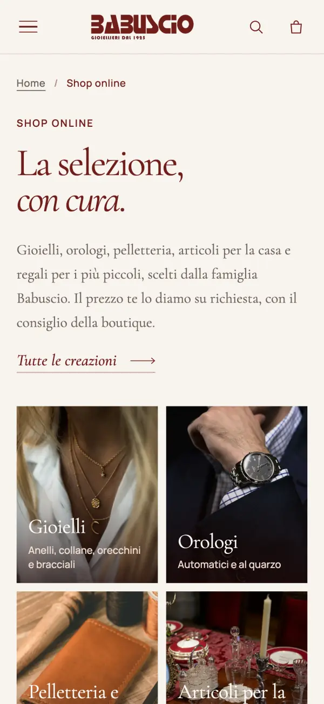
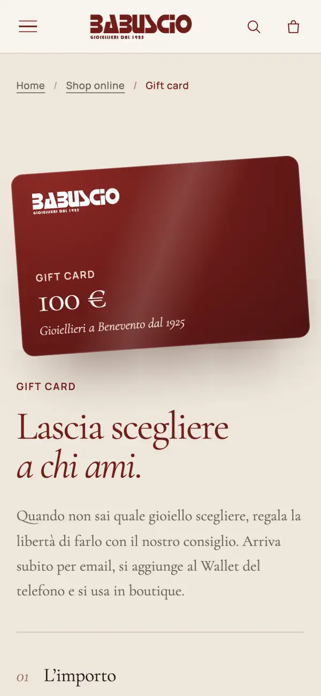
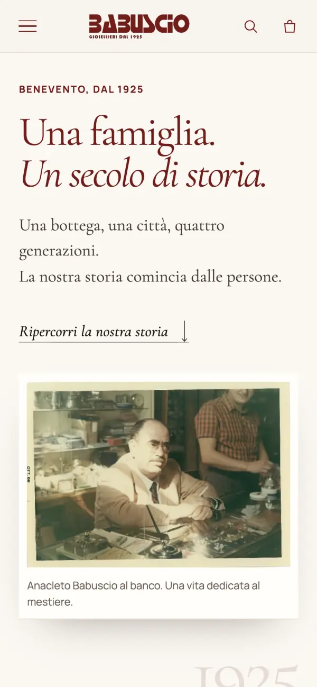

Cento anni di storia, un sito nuovo da zero.
Una gioielleria storica di Benevento aveva bisogno di più di una vetrina: raccontare la famiglia, far scoprire gioielli e orologi online e poter aggiornare tutto in autonomia. Ho progettato e sviluppato il sito, il negozio online e il gestionale privato, curando ogni pagina su computer e su telefono.
Il sito non è ancora pubblico: le immagini sono anteprime della versione in sviluppo, con alcune foto segnaposto in attesa degli scatti definitivi.
Lo shop scorre da solo: passa sopra per fermarlo.
Racconto della famiglia
Home a capitoli con foto e video, e la storia dal 1925 impaginata come un libro, con le fotografie d’archivio.
Negozio online
Gioielli, orologi, pelletteria e casa con ricerca, filtri per persona e occasione e una scheda per ogni articolo.
Gift card digitali
Si scelgono online, arrivano per email, sono predisposte per Apple e Google Wallet e il saldo si controlla da sé.
Gestionale privato
Articoli, foto, richieste e gift card in un pannello semplice, con permessi diversi per chi ci lavora.
Articoli dal telefono
Un bot Telegram guida passo passo: foto, nome, prezzo, dettagli. L’articolo arriva in bozza, pronto da approvare.
Orari delle feste
Natale, ferie e festività si impostano dal gestionale: il sito dice chiaramente quando e per quali giorni valgono.
Newsletter in regola
Iscrizione con un clic, consensi per argomento e invio dalla casella del negozio, per non finire nello spam.
Sicurezza
Accesso al gestionale con passkey (impronta o Face ID), limiti ai tentativi e ogni azione importante registrata.
Dal telefono al sito, senza accendere il computer.
In negozio si fotografa un nuovo gioiello e lo si descrive al bot. Nel gestionale compare in bozza: con un tocco va online.
- 1 · Telegram
Foto e dettagli inviati dal telefono
- 2 · Gestionale
Si controlla e si approva
- 3 · Sito
È online nello shop
Schema illustrativo del flusso realizzato.






Pensato prima di tutto per il telefono, dove arriva la maggior parte dei clienti.
- PHP
- MySQL
- JavaScript
- HTML e CSS
- Bot Telegram
- Passkey
- SEO locale
- Hosting e dominio